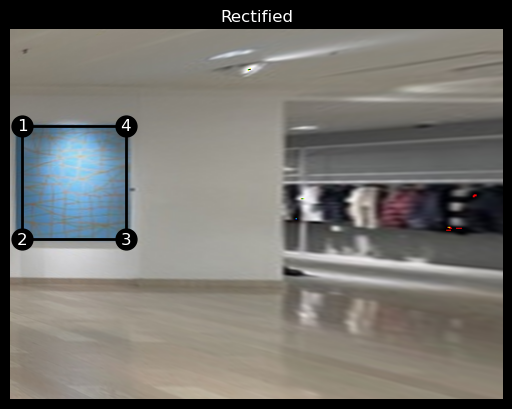
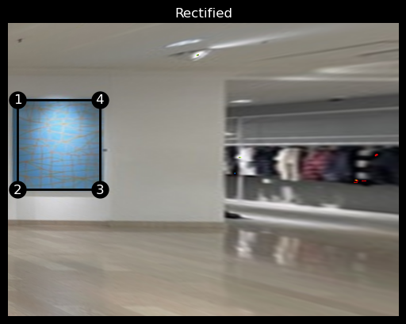

project 4
[Auto]stitching Photo Mosaics

Part 1: Shoot the Pictures
I went to a store and took pictures of mannequins wearing outfits I liked.

Part 2: Recover Homographies
Applying a homography reduces to a matrix multiplication \[ w \begin{bmatrix} x' \\ y' \\ 1 \end{bmatrix} = \begin{bmatrix} a & b & c \\ d & e & f \\ g & h & 1 \end{bmatrix} \begin{bmatrix} x \\ y \\ 1 \end{bmatrix} \] which can be rewritten as \[ \begin{aligned} wx' &= ax + by + c \\ wy' &= dx + ey + f \\ w &= gx + hy + 1 \end{aligned} \] \[ \implies \begin{aligned} (gx + hy + 1)x' &= ax + by + c \\ (gx + hy + 1)y' &= dx + ey + f \\ \end{aligned} \] \[ \implies \begin{aligned} x' &= ax + by + c - gxx'- hx'y\\ y' &= dx + ey + f - gxy'- hyy'\\ \end{aligned} \] But this is also just \[ \begin{bmatrix} x' \\ y' \end{bmatrix} = \begin{bmatrix} x & y & 1 & 0 & 0 & 0 & -xx' & -xy' \\ 0 & 0 & 0 & x & y & 1 & -yx' & -yy' \end{bmatrix} \begin{bmatrix} a \\ b \\ c \\ d \\ e \\ f \\g \\ h \end{bmatrix} \] so, given n correspondences, we can write this as a linear system \[ \begin{bmatrix} x_1 & y_1 & 1 & 0 & 0 & 0 & -x_1x_1' & -x_1y_1' \\ 0 & 0 & 0 & x_1 & y_1 & 1 & -y_1x_1' & -y_1y_1' \\ \vdots & \vdots & \vdots & \vdots & \vdots & \vdots & \vdots & \vdots \\ x_n & y_n & 1 & 0 & 0 & 0 & -x_nx_n' & -x_ny_n' \\ 0 & 0 & 0 & x_n & y_n & 1 & -y_nx_n' & -y_ny_n' \end{bmatrix} \begin{bmatrix} a \\ b \\ c \\ d \\ e \\ f \\g \\ h \end{bmatrix} = \begin{bmatrix} x_1' \\ y_1' \\ \vdots \\ x_n' \\ y_n' \end{bmatrix} \] and we can easily solve for the homography parameters using least squares.
Part 3: Warp the Images
To get the dimensions of the warped image, we can apply the homography matrix to the corners of the image and compute the bounding box of the warped image with these points (or we can skip this step altogether and just use the shape of thesource image for the warped image).
However, border points of the warped image can be negative, in which case we must calculate the offset to ensure that all indices in the warped image are non-negative.
Next, we calculate the height and width of the destination image, and use these dimensions to create indices for the warped image. We then apply the inverse offset to these indices (to align with the bounds of the warped image), and apply the inverse homography matrix to these translated indices. This will map the non-negative indices of the destination image to the source image.
Finally, we interpolate the pixels of the source image to the destination image
(I used scipy.interpolate.RectBivariateSpline),
and apply a mask to the destination image to remove the parts that are not in the source image.
Part 4: Image Rectification
Here are some results I got from rectifying the images. [ note that I was able to avoid some inconveniences by using the shape of the source image for the warped image :D ].
 

Part 5: Blend The Images into a Mosaic
I was lazy ish and did not want to manually label correspondences between images. This led me to implement automatic non-maximal suppression and feature matching. Since 4B is not due, I will not go into details of those implementation :)
Here is an example of feature matching between two images.
Using the matched features, I computed the homography between the base image (chosen to be the top), and the query image (the bottom).
I warped the corners of the query image to the base image, then found the bounding box of the entire image after stitching. I computed the translation to apply to the final image to avoid negative indices.
This all boiled down to a mess of calling np.min and np.max all sorts of corner points
and I really hope I never feel so confused with something so simple ever again.
ok. cool.
I implemented blending with a two-level laplacian pyramid.
The mask was generated by taking the distance transform of the polygon made by the four corners of the images.
I used cv2.fillPoly to fill the polygon formed by vertices of img1 with 1,
then used cv2.distanceTransform to get the distance transform of the polygon.
I repeated this for img2,
and took the ratio of the distance transforms to get the blending mask.
putting it all together